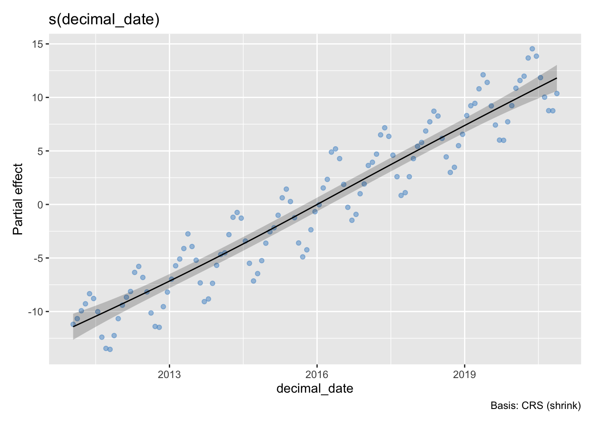
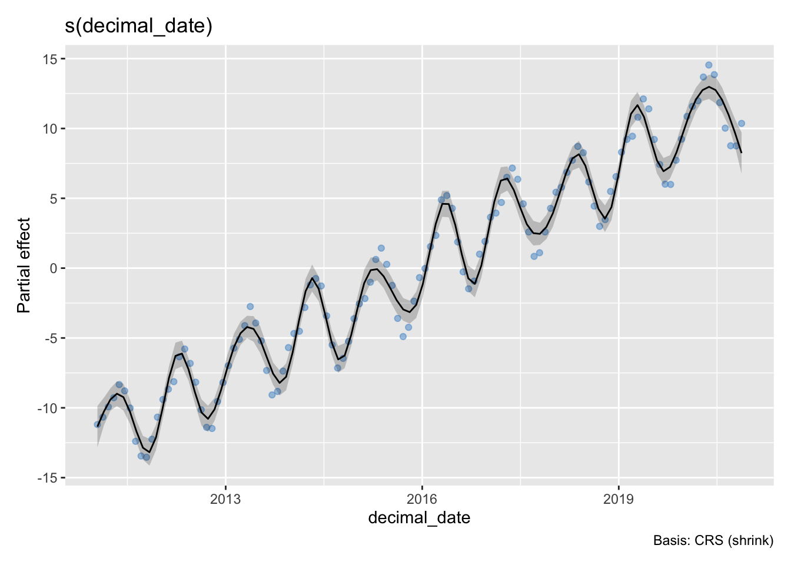
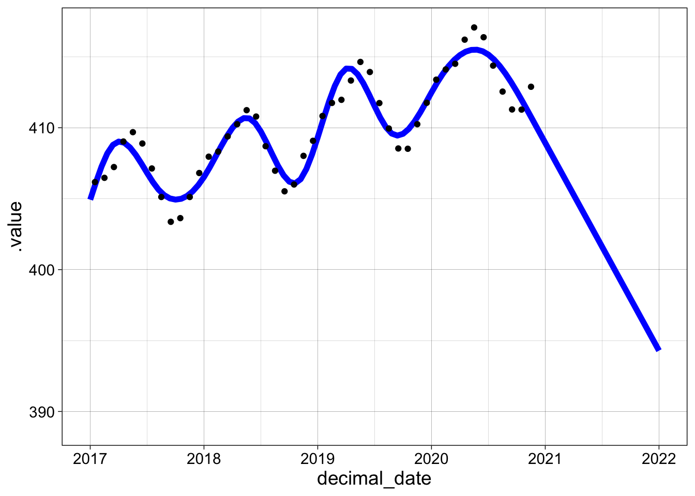

17 GAM and LOESS smoothing
In this lesson I will show you how to create GAM and LOESS models and perform some basic tasks to interact with the R model objects that the functions create. In keeping with the goals of the course, we will primarily focus on using the models for visualization and not attempt a detailed statistical analysis of when and why you might use a particular model for inference. This means we will restrict our attention to some basic uses of these models using one predictor (x) and one response (y) variable.
17.1 Generalized Additive Models
Generalized additive models are a kind of linear regression, but instead of finding coefficients of predictor variables (e.g., intercepts, slopes), the model finds a “smooth” response function for each predictor. Typically this means that a piecewise cubic function (spline) is used to approximate the relationship between two variables. We can compute predicted values, confindence and prediction intervals, and show the smooth response function that arose from the model. We don’t provide a simple list of coefficients like we did with linear regression, because the spline curve is defined by many numbers which are not usually informative on their own.
Generalized additive models are most commonly used when there is no theoretical motivation for a functional relationship between the variables being studied. We’ll look at the Mauna Loa atmospheric CO2 concentration. These data increase year over year and have well-established interannual oscillations, but there is no clear function for either of these patterns.
We will start by using the last decade of data from Lesson 1.
Here is a plot of atmospheric CO2 concentration over time.
my_theme = theme_linedraw() + theme(text = element_text(size = 14))
p1 <- co2 |> ggplot(aes(decimal_date, co2_avg)) + geom_point() + my_theme +
labs(x = "Year (decimal)", y = "Atmospheric CO2 (ppm)")
p1The next plot shows each observation, minus the annual mean, as a function of the time of year but not the actual year. Each year’s observations are overlapped.
p2 <- co2 |> ggplot(aes(year_fraction, co2_anomaly)) + geom_point() + my_theme +
labs(x = "Year fraction (decimal)", y = "Atmospheric CO2 anomaly (ppm)")
p2Here are GAM fits to both of these pairs of data using the gam function from the mgcv package. There is a plot function in the mgcv package, but I’m using a ggplot function called draw in the gratia package.
g1 <- gam(co2_anomaly ~ s(year_fraction, bs="cs"), data = co2)
draw(g1, residuals=TRUE, rug=FALSE)g2 <- gam(co2_avg ~ s(decimal_date, bs="cs"), data = co2)
draw(g2, residuals=TRUE, rug=FALSE) 
Depending on your goal, you may find that the second plot is too smooth – the interannual oscillations are smoothed out completely. We can increase the number of “knots” (by setting k=25) in the spline to capture the oscillation, but this is not the way the smoothing is normally used:
g3 <- gam(co2_avg ~ s(decimal_date, bs="cs", k = 25), data = co2)
draw(g3, residuals=TRUE, rug=FALSE) 
There is a summary function for GAM fits and the broom functions glance and tidy give access to these data, but the interpretation of this output is beyond the scope of the course:
summary(g1)
Family: gaussian
Link function: identity
Formula:
co2_anomaly ~ s(year_fraction, bs = "cs")
Parametric coefficients:
Estimate Std. Error t value Pr(>|t|)
(Intercept) 3.364e-15 2.673e-02 0 1
Approximate significance of smooth terms:
edf Ref.df F p-value
s(year_fraction) 8.296 9 530.7 <2e-16 ***
---
Signif. codes: 0 '***' 0.001 '**' 0.01 '*' 0.05 '.' 0.1 ' ' 1
R-sq.(adj) = 0.976 Deviance explained = 97.8%
GCV = 0.092244 Scale est. = 0.085038 n = 119glance(g1) |> kable()| df | logLik | AIC | BIC | deviance | df.residual | nobs |
|---|---|---|---|---|---|---|
| 9.296072 | -17.3669 | 55.32595 | 83.94001 | 9.328994 | 109.7039 | 119 |
tidy(g1) |> kable()| term | edf | ref.df | statistic | p.value |
|---|---|---|---|---|
| s(year_fraction) | 8.296072 | 9 | 530.7013 | 0 |
It is often useful to compute residuals and extract predicted values.
co2 |> add_residuals(g1) |> add_fitted(g1) |> kable() |> scroll_box(height = "200px")| year | month | decimal_date | co2_avg | year_fraction | co2_anomaly | .residual | .value |
|---|---|---|---|---|---|---|---|
| 2011 | 1 | 2011.042 | 391.33 | 0.0417 | -0.3216667 | 0.4287396 | -0.7504062 |
| 2011 | 2 | 2011.125 | 391.86 | 0.1250 | 0.2083333 | 0.3028578 | -0.0945244 |
| 2011 | 3 | 2011.208 | 392.60 | 0.2083 | 0.9483333 | 0.1440604 | 0.8042729 |
| 2011 | 4 | 2011.292 | 393.25 | 0.2917 | 1.5983333 | -0.6010968 | 2.1994302 |
| 2011 | 5 | 2011.375 | 394.19 | 0.3750 | 2.5383333 | -0.5071870 | 3.0455204 |
| 2011 | 6 | 2011.458 | 393.74 | 0.4583 | 2.0883333 | -0.1757651 | 2.2640984 |
| 2011 | 7 | 2011.542 | 392.51 | 0.5417 | 0.8583333 | 0.3875911 | 0.4707422 |
| 2011 | 8 | 2011.625 | 390.13 | 0.6250 | -1.5216667 | 0.0541267 | -1.5757934 |
| 2011 | 9 | 2011.708 | 389.08 | 0.7083 | -2.5716667 | 0.3920488 | -2.9637155 |
| 2011 | 10 | 2011.792 | 388.99 | 0.7917 | -2.6616667 | 0.0151298 | -2.6767965 |
| 2011 | 11 | 2011.875 | 390.28 | 0.8750 | -1.3716667 | -0.2731017 | -1.0985650 |
| 2011 | 12 | 2011.958 | 391.86 | 0.9583 | 0.2083333 | -0.2091522 | 0.4174855 |
| 2012 | 1 | 2012.042 | 393.12 | 0.0417 | -0.7350000 | 0.0154062 | -0.7504062 |
| 2012 | 2 | 2012.125 | 393.86 | 0.1250 | 0.0050000 | 0.0995244 | -0.0945244 |
| 2012 | 3 | 2012.208 | 394.40 | 0.2083 | 0.5450000 | -0.2592729 | 0.8042729 |
| 2012 | 4 | 2012.292 | 396.18 | 0.2917 | 2.3250000 | 0.1255698 | 2.1994302 |
| 2012 | 5 | 2012.375 | 396.74 | 0.3750 | 2.8850000 | -0.1605204 | 3.0455204 |
| 2012 | 6 | 2012.458 | 395.71 | 0.4583 | 1.8550000 | -0.4090984 | 2.2640984 |
| 2012 | 7 | 2012.542 | 394.36 | 0.5417 | 0.5050000 | 0.0342578 | 0.4707422 |
| 2012 | 8 | 2012.625 | 392.39 | 0.6250 | -1.4650000 | 0.1107934 | -1.5757934 |
| 2012 | 9 | 2012.708 | 391.13 | 0.7083 | -2.7250000 | 0.2387155 | -2.9637155 |
| 2012 | 10 | 2012.792 | 391.05 | 0.7917 | -2.8050000 | -0.1282035 | -2.6767965 |
| 2012 | 11 | 2012.875 | 392.98 | 0.8750 | -0.8750000 | 0.2235650 | -1.0985650 |
| 2012 | 12 | 2012.958 | 394.34 | 0.9583 | 0.4850000 | 0.0675145 | 0.4174855 |
| 2013 | 1 | 2013.042 | 395.55 | 0.0417 | -0.9700000 | -0.2195938 | -0.7504062 |
| 2013 | 2 | 2013.125 | 396.80 | 0.1250 | 0.2800000 | 0.3745244 | -0.0945244 |
| 2013 | 3 | 2013.208 | 397.43 | 0.2083 | 0.9100000 | 0.1057271 | 0.8042729 |
| 2013 | 4 | 2013.292 | 398.41 | 0.2917 | 1.8900000 | -0.3094302 | 2.1994302 |
| 2013 | 5 | 2013.375 | 399.78 | 0.3750 | 3.2600000 | 0.2144796 | 3.0455204 |
| 2013 | 6 | 2013.458 | 398.60 | 0.4583 | 2.0800000 | -0.1840984 | 2.2640984 |
| 2013 | 7 | 2013.542 | 397.32 | 0.5417 | 0.8000000 | 0.3292578 | 0.4707422 |
| 2013 | 8 | 2013.625 | 395.20 | 0.6250 | -1.3200000 | 0.2557934 | -1.5757934 |
| 2013 | 9 | 2013.708 | 393.45 | 0.7083 | -3.0700000 | -0.1062845 | -2.9637155 |
| 2013 | 10 | 2013.792 | 393.70 | 0.7917 | -2.8200000 | -0.1432035 | -2.6767965 |
| 2013 | 11 | 2013.875 | 395.16 | 0.8750 | -1.3600000 | -0.2614350 | -1.0985650 |
| 2013 | 12 | 2013.958 | 396.84 | 0.9583 | 0.3200000 | -0.0974855 | 0.4174855 |
| 2014 | 1 | 2014.042 | 397.85 | 0.0417 | -0.7925000 | -0.0420938 | -0.7504062 |
| 2014 | 2 | 2014.125 | 398.01 | 0.1250 | -0.6325000 | -0.5379756 | -0.0945244 |
| 2014 | 3 | 2014.208 | 399.71 | 0.2083 | 1.0675000 | 0.2632271 | 0.8042729 |
| 2014 | 4 | 2014.292 | 401.33 | 0.2917 | 2.6875000 | 0.4880698 | 2.1994302 |
| 2014 | 5 | 2014.375 | 401.78 | 0.3750 | 3.1375000 | 0.0919796 | 3.0455204 |
| 2014 | 6 | 2014.458 | 401.25 | 0.4583 | 2.6075000 | 0.3434016 | 2.2640984 |
| 2014 | 7 | 2014.542 | 399.11 | 0.5417 | 0.4675000 | -0.0032422 | 0.4707422 |
| 2014 | 8 | 2014.625 | 397.03 | 0.6250 | -1.6125000 | -0.0367066 | -1.5757934 |
| 2014 | 9 | 2014.708 | 395.38 | 0.7083 | -3.2625000 | -0.2987845 | -2.9637155 |
| 2014 | 10 | 2014.792 | 396.07 | 0.7917 | -2.5725000 | 0.1042965 | -2.6767965 |
| 2014 | 11 | 2014.875 | 397.28 | 0.8750 | -1.3625000 | -0.2639350 | -1.0985650 |
| 2014 | 12 | 2014.958 | 398.91 | 0.9583 | 0.2675000 | -0.1499855 | 0.4174855 |
| 2015 | 1 | 2015.042 | 399.98 | 0.0417 | -0.8458333 | -0.0954271 | -0.7504062 |
| 2015 | 2 | 2015.125 | 400.35 | 0.1250 | -0.4758333 | -0.3813089 | -0.0945244 |
| 2015 | 3 | 2015.208 | 401.52 | 0.2083 | 0.6941667 | -0.1101062 | 0.8042729 |
| 2015 | 4 | 2015.292 | 403.15 | 0.2917 | 2.3241667 | 0.1247365 | 2.1994302 |
| 2015 | 5 | 2015.375 | 403.96 | 0.3750 | 3.1341667 | 0.0886463 | 3.0455204 |
| 2015 | 6 | 2015.458 | 402.80 | 0.4583 | 1.9741667 | -0.2899317 | 2.2640984 |
| 2015 | 7 | 2015.542 | 401.29 | 0.5417 | 0.4641667 | -0.0065755 | 0.4707422 |
| 2015 | 8 | 2015.625 | 398.93 | 0.6250 | -1.8958333 | -0.3200400 | -1.5757934 |
| 2015 | 9 | 2015.708 | 397.63 | 0.7083 | -3.1958333 | -0.2321178 | -2.9637155 |
| 2015 | 10 | 2015.792 | 398.29 | 0.7917 | -2.5358333 | 0.1409631 | -2.6767965 |
| 2015 | 11 | 2015.875 | 400.16 | 0.8750 | -0.6658333 | 0.4327317 | -1.0985650 |
| 2015 | 12 | 2015.958 | 401.85 | 0.9583 | 1.0241667 | 0.6066812 | 0.4174855 |
| 2016 | 1 | 2016.042 | 402.50 | 0.0417 | -1.7225000 | -0.9720938 | -0.7504062 |
| 2016 | 2 | 2016.125 | 404.07 | 0.1250 | -0.1525000 | -0.0579756 | -0.0945244 |
| 2016 | 3 | 2016.208 | 404.87 | 0.2083 | 0.6475000 | -0.1567729 | 0.8042729 |
| 2016 | 4 | 2016.292 | 407.42 | 0.2917 | 3.1975000 | 0.9980698 | 2.1994302 |
| 2016 | 5 | 2016.375 | 407.72 | 0.3750 | 3.4975000 | 0.4519796 | 3.0455204 |
| 2016 | 6 | 2016.458 | 406.81 | 0.4583 | 2.5875000 | 0.3234016 | 2.2640984 |
| 2016 | 7 | 2016.542 | 404.40 | 0.5417 | 0.1775000 | -0.2932422 | 0.4707422 |
| 2016 | 8 | 2016.625 | 402.26 | 0.6250 | -1.9625000 | -0.3867066 | -1.5757934 |
| 2016 | 9 | 2016.708 | 401.05 | 0.7083 | -3.1725000 | -0.2087845 | -2.9637155 |
| 2016 | 10 | 2016.792 | 401.60 | 0.7917 | -2.6225000 | 0.0542965 | -2.6767965 |
| 2016 | 11 | 2016.875 | 403.53 | 0.8750 | -0.6925000 | 0.4060650 | -1.0985650 |
| 2016 | 12 | 2016.958 | 404.44 | 0.9583 | 0.2175000 | -0.1999855 | 0.4174855 |
| 2017 | 1 | 2017.042 | 406.17 | 0.0417 | -0.3850000 | 0.3654062 | -0.7504062 |
| 2017 | 2 | 2017.125 | 406.47 | 0.1250 | -0.0850000 | 0.0095244 | -0.0945244 |
| 2017 | 3 | 2017.208 | 407.23 | 0.2083 | 0.6750000 | -0.1292729 | 0.8042729 |
| 2017 | 4 | 2017.292 | 409.03 | 0.2917 | 2.4750000 | 0.2755698 | 2.1994302 |
| 2017 | 5 | 2017.375 | 409.69 | 0.3750 | 3.1350000 | 0.0894796 | 3.0455204 |
| 2017 | 6 | 2017.458 | 408.89 | 0.4583 | 2.3350000 | 0.0709016 | 2.2640984 |
| 2017 | 7 | 2017.542 | 407.13 | 0.5417 | 0.5750000 | 0.1042578 | 0.4707422 |
| 2017 | 8 | 2017.625 | 405.12 | 0.6250 | -1.4350000 | 0.1407934 | -1.5757934 |
| 2017 | 9 | 2017.708 | 403.37 | 0.7083 | -3.1850000 | -0.2212845 | -2.9637155 |
| 2017 | 10 | 2017.792 | 403.63 | 0.7917 | -2.9250000 | -0.2482035 | -2.6767965 |
| 2017 | 11 | 2017.875 | 405.12 | 0.8750 | -1.4350000 | -0.3364350 | -1.0985650 |
| 2017 | 12 | 2017.958 | 406.81 | 0.9583 | 0.2550000 | -0.1624855 | 0.4174855 |
| 2018 | 1 | 2018.042 | 407.96 | 0.0417 | -0.5600000 | 0.1904062 | -0.7504062 |
| 2018 | 2 | 2018.125 | 408.32 | 0.1250 | -0.2000000 | -0.1054756 | -0.0945244 |
| 2018 | 3 | 2018.208 | 409.39 | 0.2083 | 0.8700000 | 0.0657271 | 0.8042729 |
| 2018 | 4 | 2018.292 | 410.25 | 0.2917 | 1.7300000 | -0.4694302 | 2.1994302 |
| 2018 | 5 | 2018.375 | 411.24 | 0.3750 | 2.7200000 | -0.3255204 | 3.0455204 |
| 2018 | 6 | 2018.458 | 410.79 | 0.4583 | 2.2700000 | 0.0059016 | 2.2640984 |
| 2018 | 7 | 2018.542 | 408.70 | 0.5417 | 0.1800000 | -0.2907422 | 0.4707422 |
| 2018 | 8 | 2018.625 | 406.97 | 0.6250 | -1.5500000 | 0.0257934 | -1.5757934 |
| 2018 | 9 | 2018.708 | 405.52 | 0.7083 | -3.0000000 | -0.0362845 | -2.9637155 |
| 2018 | 10 | 2018.792 | 406.00 | 0.7917 | -2.5200000 | 0.1567965 | -2.6767965 |
| 2018 | 11 | 2018.875 | 408.02 | 0.8750 | -0.5000000 | 0.5985650 | -1.0985650 |
| 2018 | 12 | 2018.958 | 409.08 | 0.9583 | 0.5600000 | 0.1425145 | 0.4174855 |
| 2019 | 1 | 2019.042 | 410.83 | 0.0417 | -0.6041667 | 0.1462396 | -0.7504062 |
| 2019 | 2 | 2019.125 | 411.75 | 0.1250 | 0.3158333 | 0.4103578 | -0.0945244 |
| 2019 | 3 | 2019.208 | 411.97 | 0.2083 | 0.5358333 | -0.2684396 | 0.8042729 |
| 2019 | 4 | 2019.292 | 413.33 | 0.2917 | 1.8958333 | -0.3035968 | 2.1994302 |
| 2019 | 5 | 2019.375 | 414.64 | 0.3750 | 3.2058333 | 0.1603130 | 3.0455204 |
| 2019 | 6 | 2019.458 | 413.93 | 0.4583 | 2.4958333 | 0.2317349 | 2.2640984 |
| 2019 | 7 | 2019.542 | 411.74 | 0.5417 | 0.3058333 | -0.1649089 | 0.4707422 |
| 2019 | 8 | 2019.625 | 409.95 | 0.6250 | -1.4841667 | 0.0916267 | -1.5757934 |
| 2019 | 9 | 2019.708 | 408.54 | 0.7083 | -2.8941667 | 0.0695488 | -2.9637155 |
| 2019 | 10 | 2019.792 | 408.52 | 0.7917 | -2.9141667 | -0.2373702 | -2.6767965 |
| 2019 | 11 | 2019.875 | 410.25 | 0.8750 | -1.1841667 | -0.0856017 | -1.0985650 |
| 2019 | 12 | 2019.958 | 411.76 | 0.9583 | 0.3258333 | -0.0916522 | 0.4174855 |
| 2020 | 1 | 2020.042 | 413.39 | 0.0417 | -0.6154545 | 0.1349517 | -0.7504062 |
| 2020 | 2 | 2020.125 | 414.11 | 0.1250 | 0.1045455 | 0.1990699 | -0.0945244 |
| 2020 | 3 | 2020.208 | 414.51 | 0.2083 | 0.5045455 | -0.2997274 | 0.8042729 |
| 2020 | 4 | 2020.292 | 416.21 | 0.2917 | 2.2045455 | 0.0051153 | 2.1994302 |
| 2020 | 5 | 2020.375 | 417.07 | 0.3750 | 3.0645455 | 0.0190251 | 3.0455204 |
| 2020 | 6 | 2020.458 | 416.38 | 0.4583 | 2.3745455 | 0.1104471 | 2.2640984 |
| 2020 | 7 | 2020.542 | 414.38 | 0.5417 | 0.3745455 | -0.0961967 | 0.4707422 |
| 2020 | 8 | 2020.625 | 412.55 | 0.6250 | -1.4554545 | 0.1203388 | -1.5757934 |
| 2020 | 9 | 2020.708 | 411.29 | 0.7083 | -2.7154545 | 0.2482610 | -2.9637155 |
| 2020 | 10 | 2020.792 | 411.28 | 0.7917 | -2.7254545 | -0.0486581 | -2.6767965 |
| 2020 | 11 | 2020.875 | 412.89 | 0.8750 | -1.1154545 | -0.0168896 | -1.0985650 |
If we generate new data (dates), we can plot predictions too. Since the model is a piecewise cubic function, extrapolations are often dramatically unreliable. The downward facing cubic in the last “bump” is simply continued, with comically bad results. Extrapolation of models, and especially smooths, is somewhere between risky and foolish!
new_data <- tibble(decimal_date = seq(2017, 2022, by = 0.05))
new_data |> add_fitted(g3) |>
ggplot(aes(decimal_date, .value)) +
geom_line(color = "blue", size = 2) +
geom_point(aes(y= co2_avg), data = co2) + my_theme + xlim(2017, 2022)
If you want confidence intervals on the fitted values, use the confint function together with the name of the smooth you are extracting. Be aware that this function does not include the intercept (or grand mean) from the model, so the values are all centred on zero.
confint(g1, "s(year_fraction)", level = 0.95) |> kable() |> scroll_box(height = "200px")| smooth | type | by | year_fraction | est | se | crit | lower | upper |
|---|---|---|---|---|---|---|---|---|
| s(year_fraction) | CRS (shrink) | NA | 0.0417000 | -0.7504062 | 0.0911643 | 1.959964 | -0.9290849 | -0.5717275 |
| s(year_fraction) | CRS (shrink) | NA | 0.0509586 | -0.6817578 | 0.0809578 | 1.959964 | -0.8404323 | -0.5230834 |
| s(year_fraction) | CRS (shrink) | NA | 0.0602172 | -0.6127904 | 0.0733927 | 1.959964 | -0.7566374 | -0.4689434 |
| s(year_fraction) | CRS (shrink) | NA | 0.0694758 | -0.5431848 | 0.0690820 | 1.959964 | -0.6785830 | -0.4077867 |
| s(year_fraction) | CRS (shrink) | NA | 0.0787343 | -0.4726221 | 0.0681206 | 1.959964 | -0.6061360 | -0.3391083 |
| s(year_fraction) | CRS (shrink) | NA | 0.0879929 | -0.4007832 | 0.0699213 | 1.959964 | -0.5378264 | -0.2637400 |
| s(year_fraction) | CRS (shrink) | NA | 0.0972515 | -0.3273490 | 0.0734372 | 1.959964 | -0.4712834 | -0.1834146 |
| s(year_fraction) | CRS (shrink) | NA | 0.1065101 | -0.2520005 | 0.0775479 | 1.959964 | -0.4039916 | -0.1000094 |
| s(year_fraction) | CRS (shrink) | NA | 0.1157687 | -0.1744186 | 0.0812998 | 1.959964 | -0.3337632 | -0.0150740 |
| s(year_fraction) | CRS (shrink) | NA | 0.1250273 | -0.0942843 | 0.0839689 | 1.959964 | -0.2588604 | 0.0702918 |
| s(year_fraction) | CRS (shrink) | NA | 0.1342859 | -0.0112785 | 0.0850509 | 1.959964 | -0.1779752 | 0.1554181 |
| s(year_fraction) | CRS (shrink) | NA | 0.1435444 | 0.0749178 | 0.0842571 | 1.959964 | -0.0902230 | 0.2400586 |
| s(year_fraction) | CRS (shrink) | NA | 0.1528030 | 0.1646548 | 0.0816675 | 1.959964 | 0.0045895 | 0.3247201 |
| s(year_fraction) | CRS (shrink) | NA | 0.1620616 | 0.2584060 | 0.0780515 | 1.959964 | 0.1054279 | 0.4113841 |
| s(year_fraction) | CRS (shrink) | NA | 0.1713202 | 0.3566751 | 0.0744217 | 1.959964 | 0.2108112 | 0.5025390 |
| s(year_fraction) | CRS (shrink) | NA | 0.1805788 | 0.4599660 | 0.0717896 | 1.959964 | 0.3192609 | 0.6006710 |
| s(year_fraction) | CRS (shrink) | NA | 0.1898374 | 0.5687826 | 0.0709348 | 1.959964 | 0.4297529 | 0.7078123 |
| s(year_fraction) | CRS (shrink) | NA | 0.1990960 | 0.6836286 | 0.0721338 | 1.959964 | 0.5422489 | 0.8250084 |
| s(year_fraction) | CRS (shrink) | NA | 0.2083545 | 0.8050081 | 0.0750447 | 1.959964 | 0.6579232 | 0.9520929 |
| s(year_fraction) | CRS (shrink) | NA | 0.2176131 | 0.9334248 | 0.0788582 | 1.959964 | 0.7788655 | 1.0879841 |
| s(year_fraction) | CRS (shrink) | NA | 0.2268717 | 1.0693825 | 0.0825780 | 1.959964 | 0.9075326 | 1.2312324 |
| s(year_fraction) | CRS (shrink) | NA | 0.2361303 | 1.2133852 | 0.0852431 | 1.959964 | 1.0463118 | 1.3804586 |
| s(year_fraction) | CRS (shrink) | NA | 0.2453889 | 1.3659367 | 0.0860568 | 1.959964 | 1.1972685 | 1.5346049 |
| s(year_fraction) | CRS (shrink) | NA | 0.2546475 | 1.5269337 | 0.0846483 | 1.959964 | 1.3610260 | 1.6928413 |
| s(year_fraction) | CRS (shrink) | NA | 0.2639061 | 1.6938620 | 0.0816108 | 1.959964 | 1.5339079 | 1.8538162 |
| s(year_fraction) | CRS (shrink) | NA | 0.2731646 | 1.8636092 | 0.0779237 | 1.959964 | 1.7108815 | 2.0163368 |
| s(year_fraction) | CRS (shrink) | NA | 0.2824232 | 2.0330625 | 0.0746645 | 1.959964 | 1.8867229 | 2.1794022 |
| s(year_fraction) | CRS (shrink) | NA | 0.2916818 | 2.1991095 | 0.0728082 | 1.959964 | 2.0564080 | 2.3418110 |
| s(year_fraction) | CRS (shrink) | NA | 0.3009404 | 2.3586375 | 0.0729367 | 1.959964 | 2.2156842 | 2.5015908 |
| s(year_fraction) | CRS (shrink) | NA | 0.3101990 | 2.5085339 | 0.0750030 | 1.959964 | 2.3615307 | 2.6555371 |
| s(year_fraction) | CRS (shrink) | NA | 0.3194576 | 2.6456862 | 0.0783538 | 1.959964 | 2.4921155 | 2.7992569 |
| s(year_fraction) | CRS (shrink) | NA | 0.3287162 | 2.7669818 | 0.0819890 | 1.959964 | 2.6062862 | 2.9276773 |
| s(year_fraction) | CRS (shrink) | NA | 0.3379747 | 2.8693080 | 0.0848477 | 1.959964 | 2.7030096 | 3.0356064 |
| s(year_fraction) | CRS (shrink) | NA | 0.3472333 | 2.9495523 | 0.0859988 | 1.959964 | 2.7809978 | 3.1181068 |
| s(year_fraction) | CRS (shrink) | NA | 0.3564919 | 3.0053003 | 0.0849387 | 1.959964 | 2.8388235 | 3.1717772 |
| s(year_fraction) | CRS (shrink) | NA | 0.3657505 | 3.0369301 | 0.0821714 | 1.959964 | 2.8758770 | 3.1979831 |
| s(year_fraction) | CRS (shrink) | NA | 0.3750091 | 3.0455178 | 0.0786209 | 1.959964 | 2.8914238 | 3.1996119 |
| s(year_fraction) | CRS (shrink) | NA | 0.3842677 | 3.0321399 | 0.0753299 | 1.959964 | 2.8844960 | 3.1797837 |
| s(year_fraction) | CRS (shrink) | NA | 0.3935263 | 2.9978724 | 0.0732708 | 1.959964 | 2.8542642 | 3.1414805 |
| s(year_fraction) | CRS (shrink) | NA | 0.4027848 | 2.9437916 | 0.0730697 | 1.959964 | 2.8005775 | 3.0870057 |
| s(year_fraction) | CRS (shrink) | NA | 0.4120434 | 2.8709738 | 0.0747628 | 1.959964 | 2.7244414 | 3.0175062 |
| s(year_fraction) | CRS (shrink) | NA | 0.4213020 | 2.7804953 | 0.0777795 | 1.959964 | 2.6280503 | 2.9329403 |
| s(year_fraction) | CRS (shrink) | NA | 0.4305606 | 2.6734322 | 0.0811704 | 1.959964 | 2.5143412 | 2.8325232 |
| s(year_fraction) | CRS (shrink) | NA | 0.4398192 | 2.5508609 | 0.0838921 | 1.959964 | 2.3864353 | 2.7152864 |
| s(year_fraction) | CRS (shrink) | NA | 0.4490778 | 2.4138575 | 0.0850125 | 1.959964 | 2.2472359 | 2.5804790 |
| s(year_fraction) | CRS (shrink) | NA | 0.4583364 | 2.2634829 | 0.0840212 | 1.959964 | 2.0988044 | 2.4281614 |
| s(year_fraction) | CRS (shrink) | NA | 0.4675949 | 2.1007375 | 0.0814056 | 1.959964 | 1.9411854 | 2.2602895 |
| s(year_fraction) | CRS (shrink) | NA | 0.4768535 | 1.9266062 | 0.0780703 | 1.959964 | 1.7735911 | 2.0796212 |
| s(year_fraction) | CRS (shrink) | NA | 0.4861121 | 1.7420743 | 0.0750319 | 1.959964 | 1.5950145 | 1.8891340 |
| s(year_fraction) | CRS (shrink) | NA | 0.4953707 | 1.5481269 | 0.0732232 | 1.959964 | 1.4046120 | 1.6916417 |
| s(year_fraction) | CRS (shrink) | NA | 0.5046293 | 1.3457491 | 0.0732233 | 1.959964 | 1.2022340 | 1.4892643 |
| s(year_fraction) | CRS (shrink) | NA | 0.5138879 | 1.1359263 | 0.0750322 | 1.959964 | 0.9888658 | 1.2829867 |
| s(year_fraction) | CRS (shrink) | NA | 0.5231465 | 0.9196434 | 0.0780708 | 1.959964 | 0.7666274 | 1.0726594 |
| s(year_fraction) | CRS (shrink) | NA | 0.5324051 | 0.6978857 | 0.0814061 | 1.959964 | 0.5383327 | 0.8574387 |
| s(year_fraction) | CRS (shrink) | NA | 0.5416636 | 0.4716384 | 0.0840216 | 1.959964 | 0.3069591 | 0.6363176 |
| s(year_fraction) | CRS (shrink) | NA | 0.5509222 | 0.2418865 | 0.0850127 | 1.959964 | 0.0752646 | 0.4085084 |
| s(year_fraction) | CRS (shrink) | NA | 0.5601808 | 0.0096704 | 0.0838921 | 1.959964 | -0.1547552 | 0.1740959 |
| s(year_fraction) | CRS (shrink) | NA | 0.5694394 | -0.2237469 | 0.0811703 | 1.959964 | -0.3828378 | -0.0646561 |
| s(year_fraction) | CRS (shrink) | NA | 0.5786980 | -0.4570459 | 0.0777795 | 1.959964 | -0.6094909 | -0.3046010 |
| s(year_fraction) | CRS (shrink) | NA | 0.5879566 | -0.6889073 | 0.0747631 | 1.959964 | -0.8354404 | -0.5423742 |
| s(year_fraction) | CRS (shrink) | NA | 0.5972152 | -0.9180116 | 0.0730706 | 1.959964 | -1.0612274 | -0.7747958 |
| s(year_fraction) | CRS (shrink) | NA | 0.6064737 | -1.1430394 | 0.0732723 | 1.959964 | -1.2866505 | -0.9994283 |
| s(year_fraction) | CRS (shrink) | NA | 0.6157323 | -1.3626714 | 0.0753319 | 1.959964 | -1.5103193 | -1.2150235 |
| s(year_fraction) | CRS (shrink) | NA | 0.6249909 | -1.5755880 | 0.0786232 | 1.959964 | -1.7296867 | -1.4214894 |
| s(year_fraction) | CRS (shrink) | NA | 0.6342495 | -1.7804700 | 0.0821737 | 1.959964 | -1.9415275 | -1.6194126 |
| s(year_fraction) | CRS (shrink) | NA | 0.6435081 | -1.9759979 | 0.0849405 | 1.959964 | -2.1424783 | -1.8095176 |
| s(year_fraction) | CRS (shrink) | NA | 0.6527667 | -2.1608524 | 0.0859999 | 1.959964 | -2.3294090 | -1.9922957 |
| s(year_fraction) | CRS (shrink) | NA | 0.6620253 | -2.3336765 | 0.0848480 | 1.959964 | -2.4999756 | -2.1673774 |
| s(year_fraction) | CRS (shrink) | NA | 0.6712838 | -2.4929639 | 0.0819890 | 1.959964 | -2.6536594 | -2.3322684 |
| s(year_fraction) | CRS (shrink) | NA | 0.6805424 | -2.6371709 | 0.0783543 | 1.959964 | -2.7907424 | -2.4835994 |
| s(year_fraction) | CRS (shrink) | NA | 0.6898010 | -2.7647537 | 0.0750049 | 1.959964 | -2.9117606 | -2.6177467 |
| s(year_fraction) | CRS (shrink) | NA | 0.6990596 | -2.8741684 | 0.0729410 | 1.959964 | -3.0171302 | -2.7312066 |
| s(year_fraction) | CRS (shrink) | NA | 0.7083182 | -2.9638713 | 0.0728153 | 1.959964 | -3.1065867 | -2.8211559 |
| s(year_fraction) | CRS (shrink) | NA | 0.7175768 | -3.0323187 | 0.0746737 | 1.959964 | -3.1786765 | -2.8859609 |
| s(year_fraction) | CRS (shrink) | NA | 0.7268354 | -3.0779667 | 0.0779337 | 1.959964 | -3.2307140 | -2.9252194 |
| s(year_fraction) | CRS (shrink) | NA | 0.7360939 | -3.0992716 | 0.0816198 | 1.959964 | -3.2592435 | -2.9392997 |
| s(year_fraction) | CRS (shrink) | NA | 0.7453525 | -3.0946895 | 0.0846548 | 1.959964 | -3.2606099 | -2.9287691 |
| s(year_fraction) | CRS (shrink) | NA | 0.7546111 | -3.0626767 | 0.0860599 | 1.959964 | -3.2313511 | -2.8940024 |
| s(year_fraction) | CRS (shrink) | NA | 0.7638697 | -3.0024381 | 0.0852435 | 1.959964 | -3.1695122 | -2.8353639 |
| s(year_fraction) | CRS (shrink) | NA | 0.7731283 | -2.9161942 | 0.0825787 | 1.959964 | -3.0780455 | -2.7543430 |
| s(year_fraction) | CRS (shrink) | NA | 0.7823869 | -2.8069254 | 0.0788645 | 1.959964 | -2.9614971 | -2.6523537 |
| s(year_fraction) | CRS (shrink) | NA | 0.7916455 | -2.6776118 | 0.0750630 | 1.959964 | -2.8247325 | -2.5304911 |
| s(year_fraction) | CRS (shrink) | NA | 0.8009040 | -2.5312335 | 0.0721692 | 1.959964 | -2.6726826 | -2.3897844 |
| s(year_fraction) | CRS (shrink) | NA | 0.8101626 | -2.3707707 | 0.0709881 | 1.959964 | -2.5099048 | -2.2316366 |
| s(year_fraction) | CRS (shrink) | NA | 0.8194212 | -2.1992036 | 0.0718551 | 1.959964 | -2.3400371 | -2.0583701 |
| s(year_fraction) | CRS (shrink) | NA | 0.8286798 | -2.0195124 | 0.0744886 | 1.959964 | -2.1655074 | -1.8735174 |
| s(year_fraction) | CRS (shrink) | NA | 0.8379384 | -1.8346772 | 0.0781075 | 1.959964 | -1.9877650 | -1.6815894 |
| s(year_fraction) | CRS (shrink) | NA | 0.8471970 | -1.6476782 | 0.0817031 | 1.959964 | -1.8078133 | -1.4875431 |
| s(year_fraction) | CRS (shrink) | NA | 0.8564556 | -1.4614956 | 0.0842698 | 1.959964 | -1.6266614 | -1.2963298 |
| s(year_fraction) | CRS (shrink) | NA | 0.8657141 | -1.2785611 | 0.0850509 | 1.959964 | -1.4452578 | -1.1118643 |
| s(year_fraction) | CRS (shrink) | NA | 0.8749727 | -1.0990889 | 0.0839870 | 1.959964 | -1.2637004 | -0.9344774 |
| s(year_fraction) | CRS (shrink) | NA | 0.8842313 | -0.9227328 | 0.0813947 | 1.959964 | -1.0822634 | -0.7632021 |
| s(year_fraction) | CRS (shrink) | NA | 0.8934899 | -0.7491465 | 0.0778161 | 1.959964 | -0.9016632 | -0.5966297 |
| s(year_fraction) | CRS (shrink) | NA | 0.9027485 | -0.5779838 | 0.0740205 | 1.959964 | -0.7230612 | -0.4329063 |
| s(year_fraction) | CRS (shrink) | NA | 0.9120071 | -0.4088984 | 0.0710025 | 1.959964 | -0.5480608 | -0.2697361 |
| s(year_fraction) | CRS (shrink) | NA | 0.9212657 | -0.2415443 | 0.0698894 | 1.959964 | -0.3785249 | -0.1045636 |
| s(year_fraction) | CRS (shrink) | NA | 0.9305242 | -0.0755750 | 0.0716663 | 1.959964 | -0.2160385 | 0.0648884 |
| s(year_fraction) | CRS (shrink) | NA | 0.9397828 | 0.0893555 | 0.0768071 | 1.959964 | -0.0611835 | 0.2398946 |
| s(year_fraction) | CRS (shrink) | NA | 0.9490414 | 0.2535936 | 0.0851238 | 1.959964 | 0.0867541 | 0.4204332 |
| s(year_fraction) | CRS (shrink) | NA | 0.9583000 | 0.4174855 | 0.0959747 | 1.959964 | 0.2293786 | 0.6055924 |
confint(g1, "s(year_fraction)", level = 0.95) |>
ggplot(aes(year_fraction)) +
geom_ribbon(aes(ymin = lower, ymax = upper), alpha = 0.25) +
geom_line(aes(y = est)) + my_themeYou can also use lm to fit splines; these are similar to GAMs but there are some important differences. The mgcv package has a lot of features not available with lm.
| term | estimate | std.error | statistic | p.value |
|---|---|---|---|---|
| (Intercept) | 391.73 | 1.13 | 347.53 | 0.00 |
| splines::bs(decimal_date, df = 5)1 | 0.64 | 2.16 | 0.30 | 0.77 |
| splines::bs(decimal_date, df = 5)2 | 6.87 | 1.47 | 4.69 | 0.00 |
| splines::bs(decimal_date, df = 5)3 | 14.49 | 1.98 | 7.31 | 0.00 |
| splines::bs(decimal_date, df = 5)4 | 21.01 | 1.62 | 13.01 | 0.00 |
| splines::bs(decimal_date, df = 5)5 | 22.14 | 1.64 | 13.50 | 0.00 |
glance(s1) |> kable(digits = 2)| r.squared | adj.r.squared | sigma | statistic | p.value | df | logLik | AIC | BIC | deviance | df.residual | nobs |
|---|---|---|---|---|---|---|---|---|---|---|---|
| 0.91 | 0.9 | 2.31 | 219.14 | 0 | 5 | -265.4 | 544.8 | 564.26 | 602.91 | 113 | 119 |
We can use augment to generate data to plot and combine it with the original data.
a1 <- augment(s1, data = co2, se_fit = TRUE, interval="prediction")
a1 |> ggplot(aes(decimal_date)) +
geom_ribbon(aes(ymin = .lower, ymax = .upper), alpha = 0.2) +
geom_line(aes(y= .fitted)) +
geom_point(aes(y = co2_avg)) +
my_themeFor a spline that closely traces the data, increase df to 26 or more. This increases the numbers of knots or separate cubics used to approximate the data.
17.2 Locally Estimated Scatterplot Smoothing (LOESS)
LOESS smooths are constructed by making a large number of quadratic (or possibly linear) regression lines as a window moves along the x-axis. The degree of the fits and the width of the window (and other details) can be adjusted. The predictions from these many local regressions are then computed and plotted as a “smooth” of the data. We usually just imagine the line is drawn through the data in a way that allows it to track fluctuations without specifying a model.
l1 <- loess(co2_anomaly ~ year_fraction, data = co2)As with the GAMs, the summary function is not particularly easy to interpret and we will not explore the details, but you can see that this is a quadratic model with a “span” of 0.75, meaning that 75% of the data are used for each regression. (The weighting of each point in the regression varies as a function of x, resulting a continuous change in the predictions.)
summary(l1)Call:
loess(formula = co2_anomaly ~ year_fraction, data = co2)
Number of Observations: 119
Equivalent Number of Parameters: 4.58
Residual Standard Error: 0.4647
Trace of smoother matrix: 5 (exact)
Control settings:
span : 0.75
degree : 2
family : gaussian
surface : interpolate cell = 0.2
normalize: TRUE
parametric: FALSE
drop.square: FALSE We can use predict, residuals and augment on these model objects as we did for lm fits in the previous lesson.
augment(l1, se_fit = TRUE) |> kable() |> scroll_box(height = "200px")| co2_anomaly | year_fraction | .fitted | .se.fit | .resid |
|---|---|---|---|---|
| -0.3216667 | 0.0417 | -1.1874816 | 0.1278142 | 0.8658149 |
| 0.2083333 | 0.1250 | 0.3297748 | 0.0783764 | -0.1214414 |
| 0.9483333 | 0.2083 | 1.4858927 | 0.0756092 | -0.5375594 |
| 1.5983333 | 0.2917 | 2.2386031 | 0.0811237 | -0.6402698 |
| 2.5383333 | 0.3750 | 2.7453971 | 0.0876098 | -0.2070637 |
| 2.0883333 | 0.4583 | 2.1417191 | 0.0876044 | -0.0533857 |
| 0.8583333 | 0.5417 | 0.4302506 | 0.0876044 | 0.4280828 |
| -1.5216667 | 0.6250 | -1.5283681 | 0.0876098 | 0.0067014 |
| -2.5716667 | 0.7083 | -2.4561226 | 0.0811840 | -0.1155441 |
| -2.6616667 | 0.7917 | -2.3873488 | 0.0757368 | -0.2743178 |
| -1.3716667 | 0.8750 | -1.4172800 | 0.0803002 | 0.0456133 |
| 0.2083333 | 0.9583 | 0.4905675 | 0.1329762 | -0.2822341 |
| -0.7350000 | 0.0417 | -1.1874816 | 0.1278142 | 0.4524816 |
| 0.0050000 | 0.1250 | 0.3297748 | 0.0783764 | -0.3247748 |
| 0.5450000 | 0.2083 | 1.4858927 | 0.0756092 | -0.9408927 |
| 2.3250000 | 0.2917 | 2.2386031 | 0.0811237 | 0.0863969 |
| 2.8850000 | 0.3750 | 2.7453971 | 0.0876098 | 0.1396029 |
| 1.8550000 | 0.4583 | 2.1417191 | 0.0876044 | -0.2867191 |
| 0.5050000 | 0.5417 | 0.4302506 | 0.0876044 | 0.0747494 |
| -1.4650000 | 0.6250 | -1.5283681 | 0.0876098 | 0.0633681 |
| -2.7250000 | 0.7083 | -2.4561226 | 0.0811840 | -0.2688774 |
| -2.8050000 | 0.7917 | -2.3873488 | 0.0757368 | -0.4176512 |
| -0.8750000 | 0.8750 | -1.4172800 | 0.0803002 | 0.5422800 |
| 0.4850000 | 0.9583 | 0.4905675 | 0.1329762 | -0.0055675 |
| -0.9700000 | 0.0417 | -1.1874816 | 0.1278142 | 0.2174816 |
| 0.2800000 | 0.1250 | 0.3297748 | 0.0783764 | -0.0497748 |
| 0.9100000 | 0.2083 | 1.4858927 | 0.0756092 | -0.5758927 |
| 1.8900000 | 0.2917 | 2.2386031 | 0.0811237 | -0.3486031 |
| 3.2600000 | 0.3750 | 2.7453971 | 0.0876098 | 0.5146029 |
| 2.0800000 | 0.4583 | 2.1417191 | 0.0876044 | -0.0617191 |
| 0.8000000 | 0.5417 | 0.4302506 | 0.0876044 | 0.3697494 |
| -1.3200000 | 0.6250 | -1.5283681 | 0.0876098 | 0.2083681 |
| -3.0700000 | 0.7083 | -2.4561226 | 0.0811840 | -0.6138774 |
| -2.8200000 | 0.7917 | -2.3873488 | 0.0757368 | -0.4326512 |
| -1.3600000 | 0.8750 | -1.4172800 | 0.0803002 | 0.0572800 |
| 0.3200000 | 0.9583 | 0.4905675 | 0.1329762 | -0.1705675 |
| -0.7925000 | 0.0417 | -1.1874816 | 0.1278142 | 0.3949816 |
| -0.6325000 | 0.1250 | 0.3297748 | 0.0783764 | -0.9622748 |
| 1.0675000 | 0.2083 | 1.4858927 | 0.0756092 | -0.4183927 |
| 2.6875000 | 0.2917 | 2.2386031 | 0.0811237 | 0.4488969 |
| 3.1375000 | 0.3750 | 2.7453971 | 0.0876098 | 0.3921029 |
| 2.6075000 | 0.4583 | 2.1417191 | 0.0876044 | 0.4657809 |
| 0.4675000 | 0.5417 | 0.4302506 | 0.0876044 | 0.0372494 |
| -1.6125000 | 0.6250 | -1.5283681 | 0.0876098 | -0.0841319 |
| -3.2625000 | 0.7083 | -2.4561226 | 0.0811840 | -0.8063774 |
| -2.5725000 | 0.7917 | -2.3873488 | 0.0757368 | -0.1851512 |
| -1.3625000 | 0.8750 | -1.4172800 | 0.0803002 | 0.0547800 |
| 0.2675000 | 0.9583 | 0.4905675 | 0.1329762 | -0.2230675 |
| -0.8458333 | 0.0417 | -1.1874816 | 0.1278142 | 0.3416483 |
| -0.4758333 | 0.1250 | 0.3297748 | 0.0783764 | -0.8056081 |
| 0.6941667 | 0.2083 | 1.4858927 | 0.0756092 | -0.7917261 |
| 2.3241667 | 0.2917 | 2.2386031 | 0.0811237 | 0.0855636 |
| 3.1341667 | 0.3750 | 2.7453971 | 0.0876098 | 0.3887696 |
| 1.9741667 | 0.4583 | 2.1417191 | 0.0876044 | -0.1675524 |
| 0.4641667 | 0.5417 | 0.4302506 | 0.0876044 | 0.0339161 |
| -1.8958333 | 0.6250 | -1.5283681 | 0.0876098 | -0.3674653 |
| -3.1958333 | 0.7083 | -2.4561226 | 0.0811840 | -0.7397107 |
| -2.5358333 | 0.7917 | -2.3873488 | 0.0757368 | -0.1484845 |
| -0.6658333 | 0.8750 | -1.4172800 | 0.0803002 | 0.7514466 |
| 1.0241667 | 0.9583 | 0.4905675 | 0.1329762 | 0.5335992 |
| -1.7225000 | 0.0417 | -1.1874816 | 0.1278142 | -0.5350184 |
| -0.1525000 | 0.1250 | 0.3297748 | 0.0783764 | -0.4822748 |
| 0.6475000 | 0.2083 | 1.4858927 | 0.0756092 | -0.8383927 |
| 3.1975000 | 0.2917 | 2.2386031 | 0.0811237 | 0.9588969 |
| 3.4975000 | 0.3750 | 2.7453971 | 0.0876098 | 0.7521029 |
| 2.5875000 | 0.4583 | 2.1417191 | 0.0876044 | 0.4457809 |
| 0.1775000 | 0.5417 | 0.4302506 | 0.0876044 | -0.2527506 |
| -1.9625000 | 0.6250 | -1.5283681 | 0.0876098 | -0.4341319 |
| -3.1725000 | 0.7083 | -2.4561226 | 0.0811840 | -0.7163774 |
| -2.6225000 | 0.7917 | -2.3873488 | 0.0757368 | -0.2351512 |
| -0.6925000 | 0.8750 | -1.4172800 | 0.0803002 | 0.7247800 |
| 0.2175000 | 0.9583 | 0.4905675 | 0.1329762 | -0.2730675 |
| -0.3850000 | 0.0417 | -1.1874816 | 0.1278142 | 0.8024816 |
| -0.0850000 | 0.1250 | 0.3297748 | 0.0783764 | -0.4147748 |
| 0.6750000 | 0.2083 | 1.4858927 | 0.0756092 | -0.8108927 |
| 2.4750000 | 0.2917 | 2.2386031 | 0.0811237 | 0.2363969 |
| 3.1350000 | 0.3750 | 2.7453971 | 0.0876098 | 0.3896029 |
| 2.3350000 | 0.4583 | 2.1417191 | 0.0876044 | 0.1932809 |
| 0.5750000 | 0.5417 | 0.4302506 | 0.0876044 | 0.1447494 |
| -1.4350000 | 0.6250 | -1.5283681 | 0.0876098 | 0.0933681 |
| -3.1850000 | 0.7083 | -2.4561226 | 0.0811840 | -0.7288774 |
| -2.9250000 | 0.7917 | -2.3873488 | 0.0757368 | -0.5376512 |
| -1.4350000 | 0.8750 | -1.4172800 | 0.0803002 | -0.0177200 |
| 0.2550000 | 0.9583 | 0.4905675 | 0.1329762 | -0.2355675 |
| -0.5600000 | 0.0417 | -1.1874816 | 0.1278142 | 0.6274816 |
| -0.2000000 | 0.1250 | 0.3297748 | 0.0783764 | -0.5297748 |
| 0.8700000 | 0.2083 | 1.4858927 | 0.0756092 | -0.6158927 |
| 1.7300000 | 0.2917 | 2.2386031 | 0.0811237 | -0.5086031 |
| 2.7200000 | 0.3750 | 2.7453971 | 0.0876098 | -0.0253971 |
| 2.2700000 | 0.4583 | 2.1417191 | 0.0876044 | 0.1282809 |
| 0.1800000 | 0.5417 | 0.4302506 | 0.0876044 | -0.2502506 |
| -1.5500000 | 0.6250 | -1.5283681 | 0.0876098 | -0.0216319 |
| -3.0000000 | 0.7083 | -2.4561226 | 0.0811840 | -0.5438774 |
| -2.5200000 | 0.7917 | -2.3873488 | 0.0757368 | -0.1326512 |
| -0.5000000 | 0.8750 | -1.4172800 | 0.0803002 | 0.9172800 |
| 0.5600000 | 0.9583 | 0.4905675 | 0.1329762 | 0.0694325 |
| -0.6041667 | 0.0417 | -1.1874816 | 0.1278142 | 0.5833149 |
| 0.3158333 | 0.1250 | 0.3297748 | 0.0783764 | -0.0139414 |
| 0.5358333 | 0.2083 | 1.4858927 | 0.0756092 | -0.9500594 |
| 1.8958333 | 0.2917 | 2.2386031 | 0.0811237 | -0.3427698 |
| 3.2058333 | 0.3750 | 2.7453971 | 0.0876098 | 0.4604363 |
| 2.4958333 | 0.4583 | 2.1417191 | 0.0876044 | 0.3541143 |
| 0.3058333 | 0.5417 | 0.4302506 | 0.0876044 | -0.1244172 |
| -1.4841667 | 0.6250 | -1.5283681 | 0.0876098 | 0.0442014 |
| -2.8941667 | 0.7083 | -2.4561226 | 0.0811840 | -0.4380441 |
| -2.9141667 | 0.7917 | -2.3873488 | 0.0757368 | -0.5268178 |
| -1.1841667 | 0.8750 | -1.4172800 | 0.0803002 | 0.2331133 |
| 0.3258333 | 0.9583 | 0.4905675 | 0.1329762 | -0.1647341 |
| -0.6154545 | 0.0417 | -1.1874816 | 0.1278142 | 0.5720271 |
| 0.1045455 | 0.1250 | 0.3297748 | 0.0783764 | -0.2252293 |
| 0.5045455 | 0.2083 | 1.4858927 | 0.0756092 | -0.9813473 |
| 2.2045455 | 0.2917 | 2.2386031 | 0.0811237 | -0.0340576 |
| 3.0645455 | 0.3750 | 2.7453971 | 0.0876098 | 0.3191484 |
| 2.3745455 | 0.4583 | 2.1417191 | 0.0876044 | 0.2328264 |
| 0.3745455 | 0.5417 | 0.4302506 | 0.0876044 | -0.0557051 |
| -1.4554545 | 0.6250 | -1.5283681 | 0.0876098 | 0.0729135 |
| -2.7154545 | 0.7083 | -2.4561226 | 0.0811840 | -0.2593319 |
| -2.7254545 | 0.7917 | -2.3873488 | 0.0757368 | -0.3381057 |
| -1.1154545 | 0.8750 | -1.4172800 | 0.0803002 | 0.3018254 |
augment(l1, se_fit = TRUE) |>
ggplot(aes(x = year_fraction, y = .fitted)) +
geom_line() +
geom_ribbon(aes(ymin = .fitted - 2*.se.fit, ymax = .fitted + 2*.se.fit), alpha = 0.20) +
my_themeThis line is only drawn using 12 points, so we might want to generate a smoother prediction by creating a new set of dates. We also add the original data to the plot.
new_data = tibble(year_fraction = seq(min(co2$year_fraction),
max(co2$year_fraction),
length = 100))
augment(l1, newdata = new_data, se_fit = TRUE) |>
ggplot(aes(x = year_fraction, y = .fitted)) +
geom_line() +
geom_ribbon(aes(ymin = .fitted - 2*.se.fit,
ymax = .fitted + 2*.se.fit),
alpha = 0.20) +
geom_point(aes(y = co2_anomaly), data = co2) +
my_themeThe LOESS function will not predict outside of the range of data provided, so I had to select the range of new_data above carefully to get the line to start and end near the first and last points.
Now we make two plots that contrast the results with different sized windows (span) and degree of the local regression models.
l2 <- loess(co2_avg ~ decimal_date, data = co2,
degree = 1, span = 0.05)
l3 <- loess(co2_avg ~ decimal_date, data = co2,
degree = 1, span = 0.25)
new_data = tibble(decimal_date = seq(min(co2$decimal_date),
max(co2$decimal_date),
length = 300))
a2 <- augment(l2, newdata = new_data, se_fit = TRUE)
a3 <- augment(l3, newdata = new_data, se_fit = TRUE)
ggplot(a2, aes(x = decimal_date, y = .fitted)) +
geom_line(col="green") +
geom_ribbon(aes(ymin = .fitted - 2*.se.fit,
ymax = .fitted + 2*.se.fit),
alpha = 0.20, fill="green") +
geom_point(aes(y = co2_avg), data = co2) +
geom_line(data = a3,
col="blue") +
geom_ribbon(data = a3,
aes(ymin = .fitted - 2*.se.fit,
ymax = .fitted + 2*.se.fit),
alpha = 0.20, fill="blue") +
my_themeLOESS fits are slow and take a lot of memory compared to other methods (both time and storage requirements increase like the square of the number of points), so they are usually only used for small data sets.
17.3 Packages used
In addition to tidyverse, kableExtra and gapminder, in this lesson we used
broom-
mgcvfor GAMs -
gratiafor plotting and extracting information from GAMs